July 9, 2016
| We were blessed to add yet another
member to the family this month in the form of Logan Harwood, new husband
to Cami Casazza, Mark's only daughter. We were doubly blessed by the
fact that Cami & Logan wanted to have their wedding on our
property. The wedding was on a hill near our house and the reception
was in our barn. Cami & her posse completely transformed our
barn into a beautiful wedding wonderland. |
|
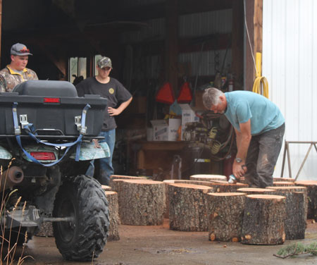 |
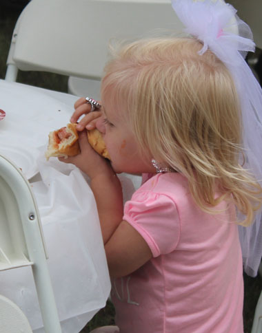 |
| This was at the rehearsal dinner, but the prep work for Mark continued | Hannah in her "bridezilla" bling, going to town on
that hot dog. You can tell she has 4 brothers, she's learned to eat fast or lose it! |
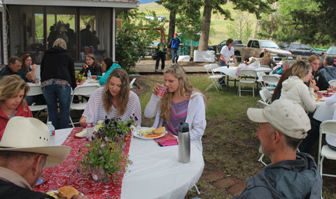 Crowd shot - the rehearsal dinner was held at the Casazza ranch, where the boys grew up |
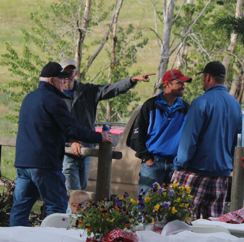 |
| Eric, doing the obligatory pointing stance for which the Casazza boys are famous | |
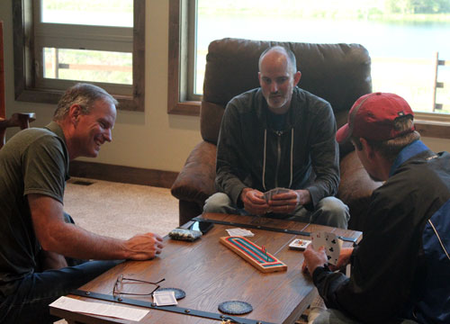 |
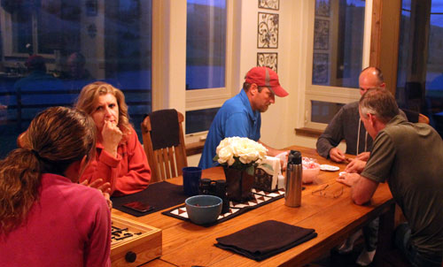 |
| The rehearsal dinner after-party was rousing games of Cribbage and Spot It at our house | |
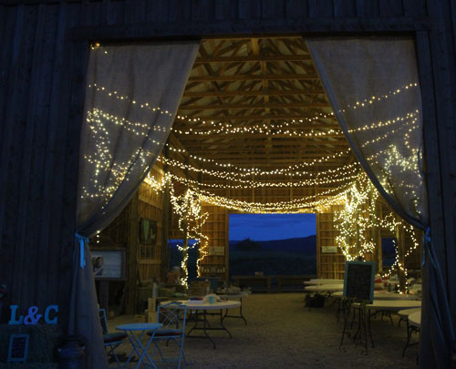 Amazed to be up past dark, we decided to check out the decorations in the barn |
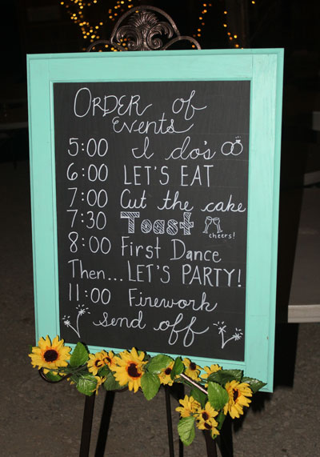 |
| I LOVED having a schedule - what a great idea! Jodi did the beautiful writing. | |
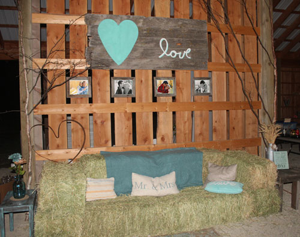 |
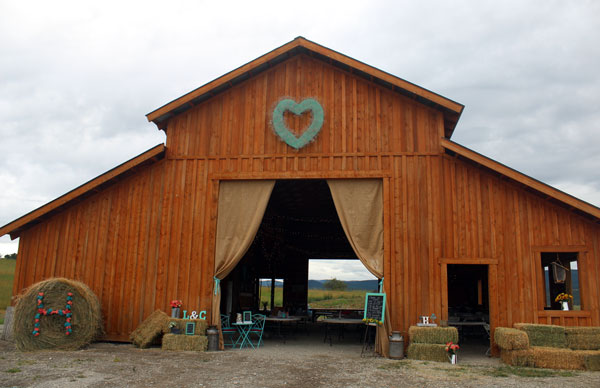 |
| One of Cami's "hay couches" that came in handy for seating | The barn, ready for action |
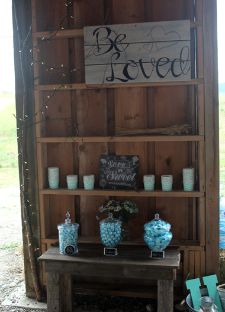 |
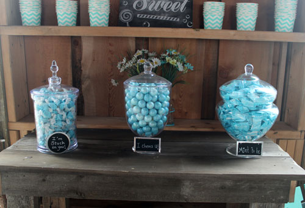 |
| Lovely decor | These candy dish signs say 'I'm stuck on you", "I chews u", and "Mint to be" |
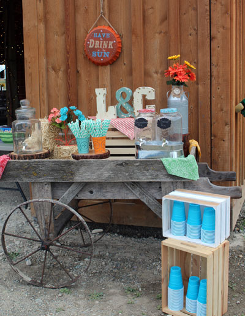 |
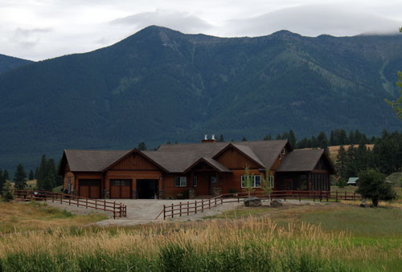 A look back at our house from the barn, we have planted trees and put some rock around |
| The drink cart. Cami's grandpa Mick made this and most of the decor for her | |
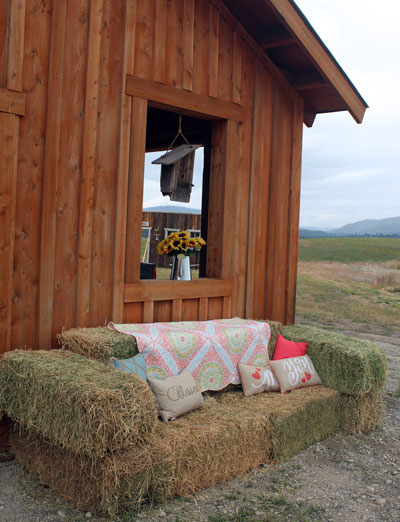 |
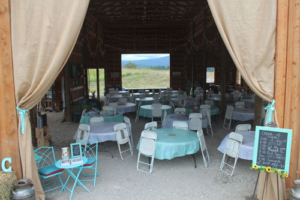 |
| Another hay couch | The calm before the storm |
|
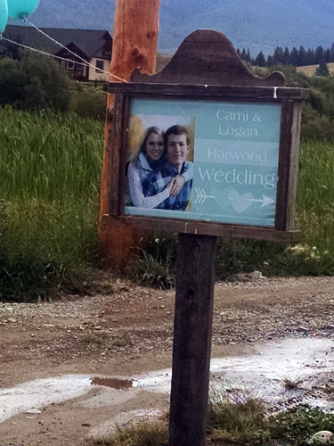 |
These are the prettiest "go this way" signs I've ever seen. Mick made a bunch of them to help people find the site. |
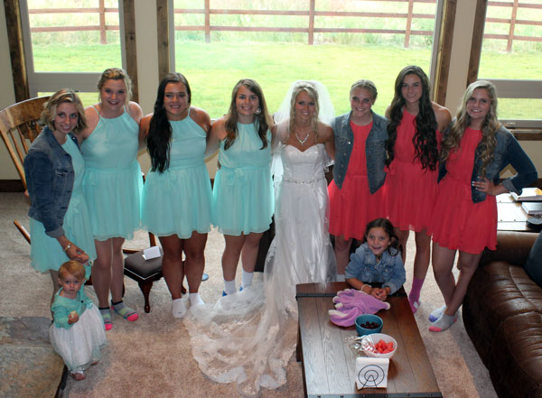 The girls came in to 'hide' from the guest before the ceremony started, so I snapped a couple of pictures |
|
|
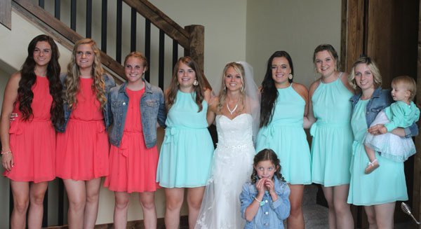 |
|
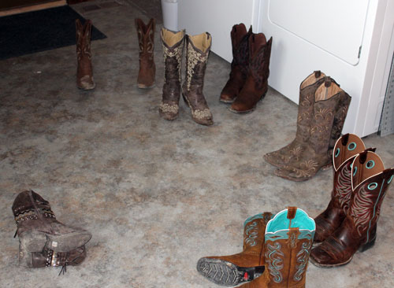 |
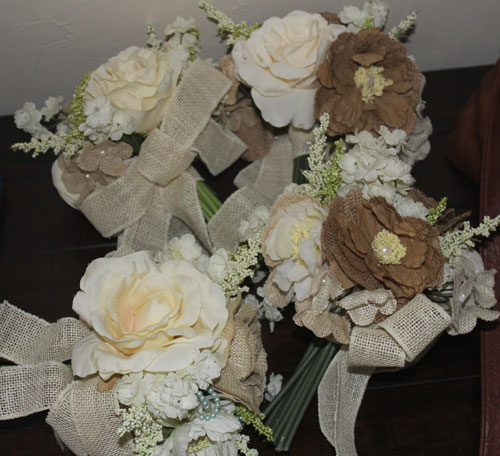 |
| I thought this display of beautiful boots in our mud room was photo-worthy | The bridesmaid bouquets were so pretty |
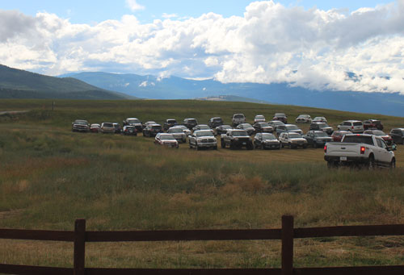 It was a strange feeling to see a parking lot out our front door, what a good crowd! |
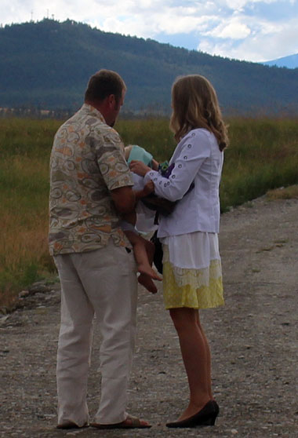 |
| This was about 10 minutes before the wedding, Lucas & Kristi
were wrestling Hannah into her dress. Nothing like pre-wedding stress! |
|
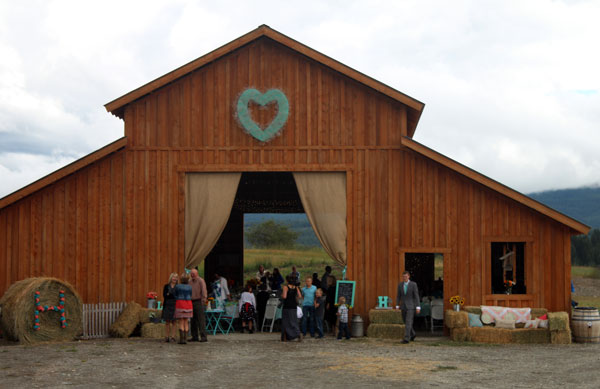 |
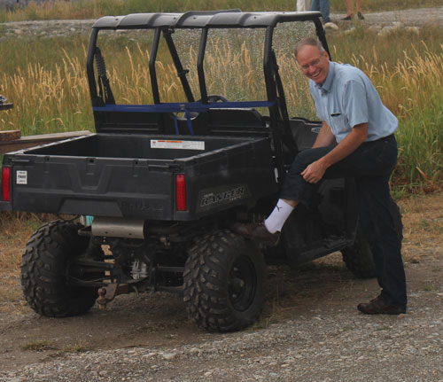 |
| Guests, anxious to begin | Larry, showing off his stylish white socks |
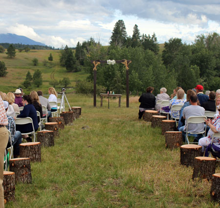 |
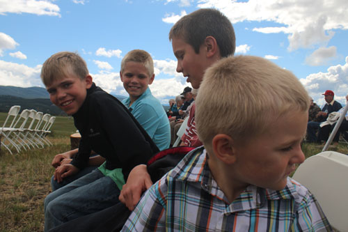 |
| Ready for the ceremony on top of the hill | Somehow I was allowed into the 'handsome Casazza boys' section |
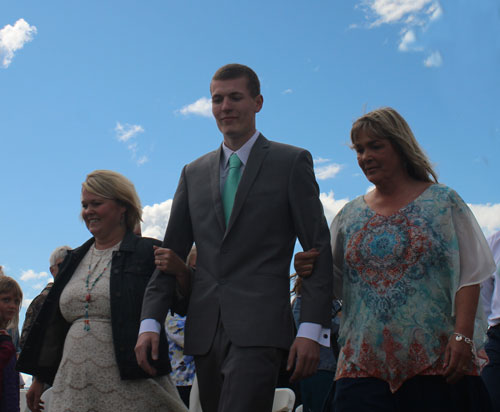 |
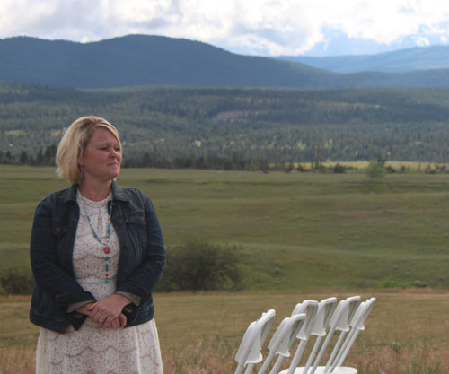 |
| Logan escorting the mothers | It's all been leading to this moment, Jodi is so proud |
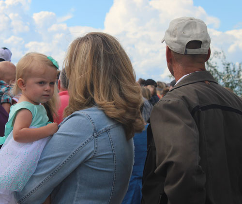 |
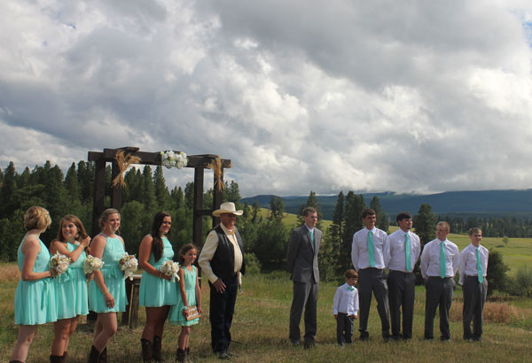 |
| Lilly abandoned her post, as did Hannah. Flower-girling is for girls! | The wedding party awaiting the bride |
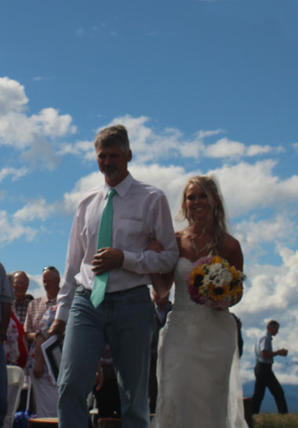 |
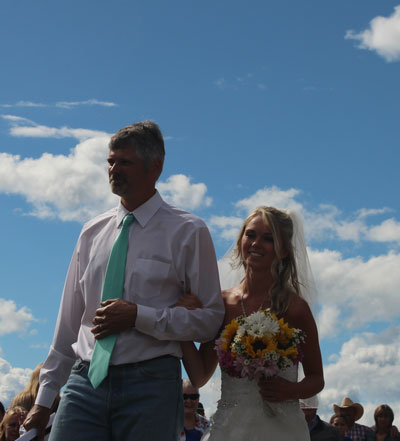 |
|
Here comes the bride! I couldn't decide which picture I liked best so you get them both. |
|
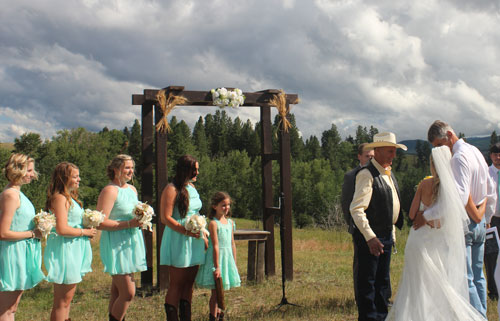 |
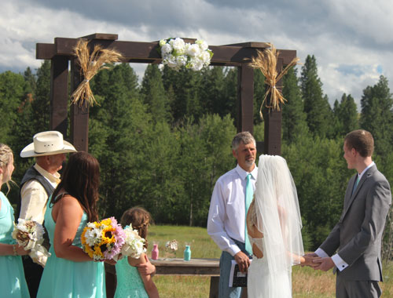 |
| Dan Sr asking who gives this woman | Then Mark took over to officiate the ceremony |
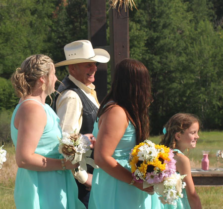 Because he is Mark, there were several jokes! |
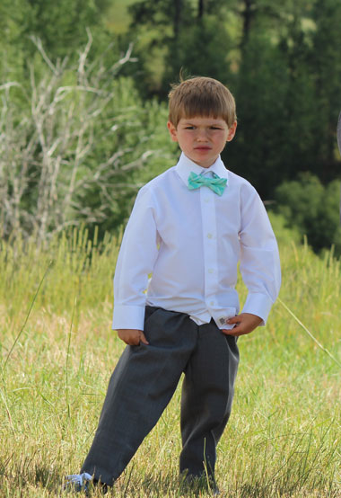 |
| This little guy was a super trooper, he hung in there the whole time | |
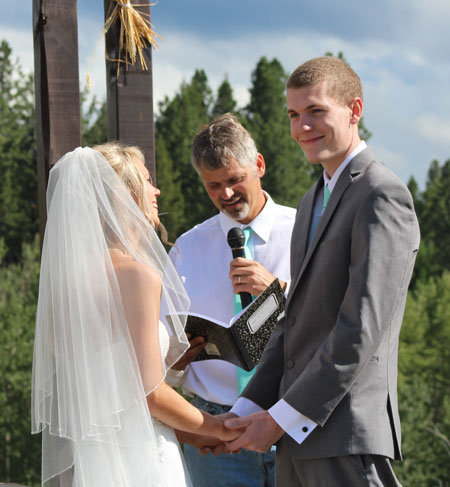 |
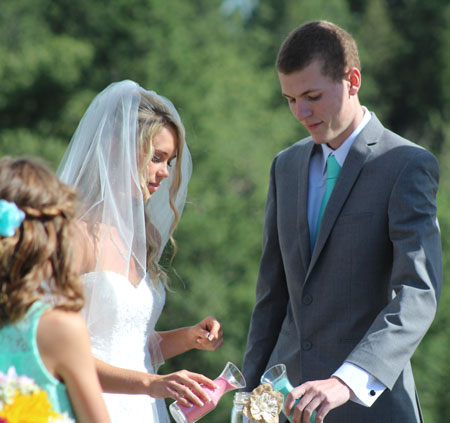 |
| Mark, bringing more smiles | Pouring the sand |
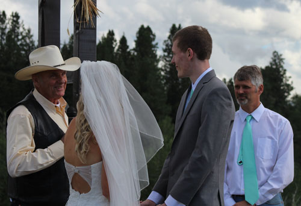 |
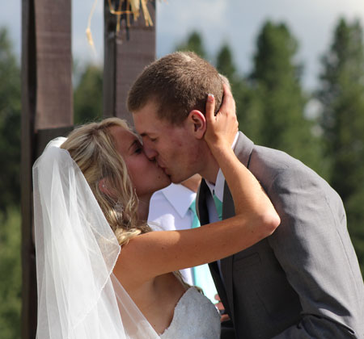 |
| Grandpa Dan giving the blessing on the marriage | You may kiss the bride! |
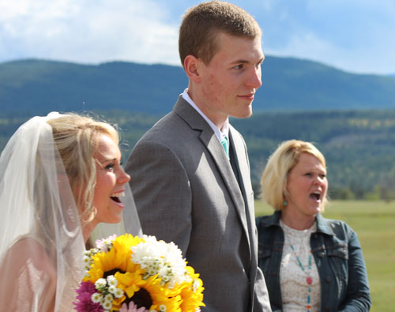 |
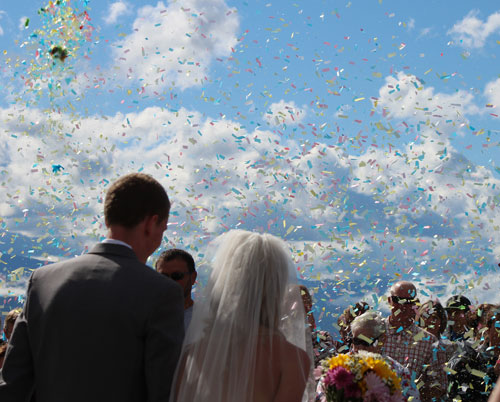 |
| I hope to find out what they saw that made them all react
like this. My guess is that Jeb was involved. |
Beautiful confetti send-off |
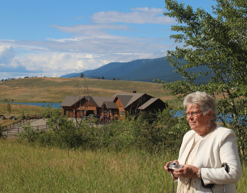 Rose & our house & the mountains. We were so thankful the
rain finally stopped just in |
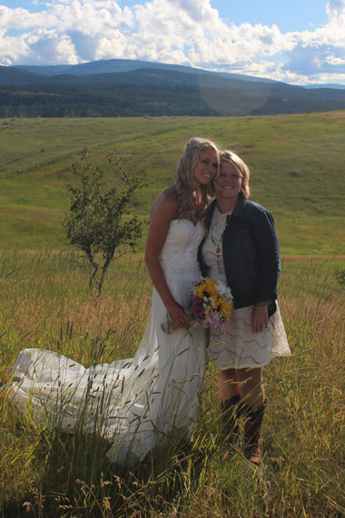 |
| Mother & daughter, and best friends | |
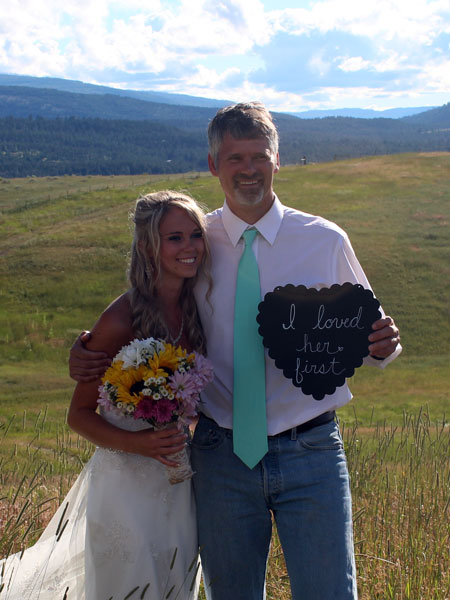 |
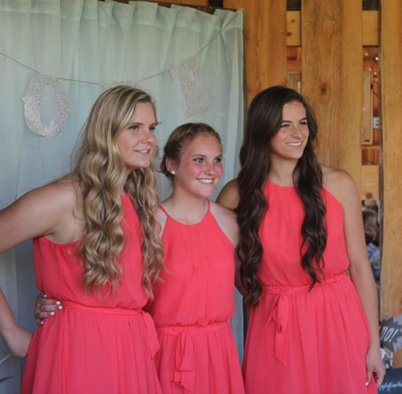 |
| It says, "I loved her first" | Beautiful nieces - Katherine (Katie), Madison, and Kaitlyn |
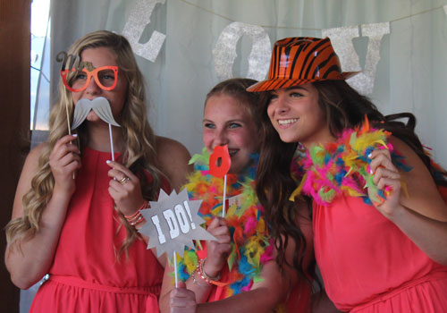 |
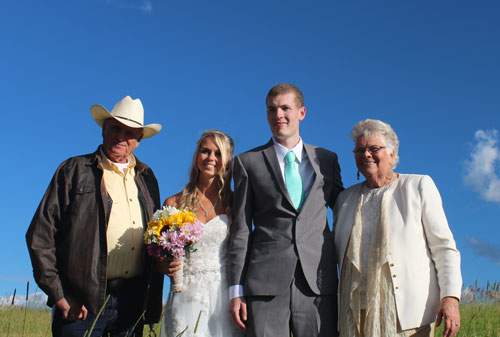 |
| Being more their usual selves | The bride & groom with Grandpa Dan and Grandma Rose |
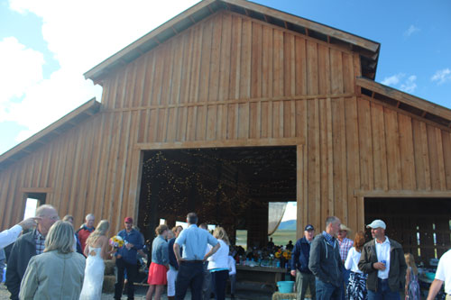 The festivities begin at the barn. The Casazza clan seemed to cluster out back. |
|
| The infamous bouncy house. Braden was the hero of the day
in a bounce house story which I will not retell here. |
|
| The head table, ready for action | Crowd shot |
| Hay couch being put to good use | First dance, with assorted Casazzas in the background |
|
The Anniversary Dance, where everyone stays on the dance floor until you learn who has been married the longest. These were the 45-years and up crowd. |
|
| Father-daughter dance | |
|
Here we anxiously await the reveal of how long the longest-married couple
have been |
|
| Dan & Rose are at 51 years | |
| These grandparents of Logan's have been married 58 years! | Bouquet toss - last year Cami was involved in a bouquet toss
brawl at Ashely's wedding. This year when Kaitlyn got a hand on it, everyone knew to give way because she is strong! |
|
They put the garter on a football for the boys, which was a hit.
Cody (Cami's brother) |
|
| Kaitlyn used her volleyball skills to snatch it out of the air | |
| He didn't want the garter, but a Casazza has to be the one to catch the ball, it's like a rule | Cami's daycare kids enjoying a dance with the bride |
|
Mark busting a move on the dance floor. He was so relieved to have the wedding over! |
|
| Rose wanted evidence that she was indeed holding this
jar. Jodi asked her to hold the jar and then quite a bit of time elapsed, but she did her job! |
|
| Here he treats Jodi to some personalized moves. I
think she's trying to cover Colt's eyes so he won't be scarred for life! |
Too late, he's scarred. |
| Lilly, looking adorable with her CapriSun | These truants have been out fishing |
| Kaitlyn, Cami, and Madison | It doesn't feel right that we're the 'older generation' now, but
that seems to be the case. Casazza wives: Tracie (Dan's), me (Eric's), Mary Beth (Larry's), and Amy (Jeb's) |
|
We may be older, but we can still act silly sometimes. |
|
| Lilly, being happy. What you didn't see was her trying to
rip Cody's lips off only moments before. |
|
| Two of Jeb's beauties - Madison & Amy. They look
more like sisters than mother & daughter. |
One of the most stylish photo-bombs I've ever seen. My mom
needs to take notes. Mom, you can add this to your photo-bomb repertoire. |
| One quick serious picture with Colter before... | he goes all Jeb on us again |
| Jodi, celebrating the end of the stress! | Is there some kind of 3-foot clearance rule I wasn't aware of? |
|
Lovely sunset that evening |
|
| Good picture of Dan, trying not to stress over the fact that Kaitlyn caught the bouquet | |
| Family picture of Jeb & Amy's crew - Madison, Aubrey, Jeb, Amy, and Colter | Stealing their selfie - Rebecca, Matt (Rebecca's beau), and Katie |
| Sparkler send-off. See the ghostly image of the bride and
groom to the right? Let's pretend I did that on purpose. |
They think sparklers are going off every time they kiss even on normal days. |
|
Dan, Rose, Kaitlyn, Storm (Madison's beau), Madison, and Katie - all sparkling |
|
|
All pictures up to this point have been mine. Now I give you some different perspectives. This section are pictures I shamelessly copied from Facebook Also, I got overwhelmed trying to sort them in chronological order, so consider this a grab-bag |
|
| Lilly, hanging out in our house before the wedding. | Hannah, in her "Petal Patrol" cute outfit |
|
Beautiful girls heading to the wedding - Lilly, Aubrey, and Ashley |
Cody escorting Ashley into the wedding |
|
This says, "...and they lived happily ever after" |
|
| Beautiful family - soon to have one more! | |
|
The first dance with the kids heckling. OK, only Aubrey was heckling. |
|
| Brother & sister, Cody & Cami | |
|
Cami & Rebecca |
|
| Dan & Rose, watching all that has come from their union | |
| A very relieved Jodi & Mark after the wedding | Bridesmaids into the sunset |
| Confetti celebration | I told you Lilly had been ripping his lips off! |
|
The barn at night |
|
| Beautiful shot of the happy couple | |
|
Jeb somehow getting all the pretty girls to dance with him |
|
| She's just here for the cake! | |
|
Youngest son Colt, escorted by his mom & dad as they leave the ceremony |
|
| Jodi's Mom Marilyn, Cami, and Jodi | |
|
Lilly checking out the drinks. "Hey, this looks better than my bottle!" |
|
| Kissin' that bride! | |
| Everybody dancing with Hannah | Katie, Cami, and Rebecca looking lovely |
| Dan's daughters Ashley & Kaitlyn, beautiful girls | The girls posing with the false front that hid the port-a-pottys |
| 3 generations of happy women | Katie and Cami sportin' some attitude |
|
Rebecca & Cami |
|
| Colt & Aubrey preceeding the bride. The sign says, "Here comes the love of your life" | |
|
Fun at the photo booth |
|
| Cousins enjoying a dance together | Kaitlyn, Cami, and Madison |
|
Aubrey and Cami cutting a rug |
|
|
The pictures from this point on are all Rebecca's (or were taken with her camera) A lot of the ones I got off Facebook were hers too. That girl is good with her new camera! |
|
|
|
|
|
Scenes of Colt during the ceremony. |
|
|
Even the sky was celebrating |
|
| Mr. & Mrs. Logan Harwood | |
|
Katie, Madison, and Kaitlyn |
|
| Cupcakes and muffins were much more practical than cake! | |
| First dance, I'm lurking in the doorway back there beside the beautiful Amy | Speaking of beautiful, here are two of Larry's beauties - Mary Beth and Katie |
|
Ashley & Cody |
|
| Rebecca & Matt. They say it's going to be years before they do this. | |
|
The anniversary dance. Do you see a profile you recognize in the doorway? |
|
| It almost looks like Larry is trying a football tackle here, but
they were dancing. |
|
| This is the first time Cody & Ashley have ever danced. And I did not intentionally photo bomb this shot. |
Beautiful picture of Tracie & Dan. She looks just like
Olivia Newton-John in this picture! |
| Normally I wouldn't use such a bad picture of us, but
this is the only picture from the wedding of us together. |
Lilly kept stealing the show |
|
Great action shot of the bouquet grab |
|
| And the winner is...Kaitlyn! | |
| Again, Rebecca got awesome action shots of the garter/football catch | Cody is on it |
|
|
|
|
Larry's Lovelies |
|
| Groomsmen being very NSync | Go Logan! |
| Lilly wants to take a case or so of water bottles home with her | Carter, Lucas & Kristi's youngest son, he's a heartbreaker. What a sweetheart. |
|
I think this is the only picture I got of the beautiful front Mick made
for the port-a-pottys. |
|
| Partners in crime, working on their next plan of action. | |
| Casazzas loitering behind the barn | Dan & Larry |
|
Rebecca got a better shot of us girls - Tracie, Me, Mary Beth, and Amy |
|
| Rebecca's boyfriend Matt auditioning for a role as a
Casazza family male. Jeb, Larry, Dan, and Matt |
|
|
Besties and beauties |
|
| Sisters | |
| There is a certain amount of hazing that goes on for any
male who wants to date a Casazza female |
Happy Kaitlyn and Katie |
| A bit more serious now | Ashley & Katie |
| ...and they lived happily ever after! | Kaitlyn and Katie getting busted at the candy area of the Kid's corner |
| Matt & Rebecca | Beautiful sisters - Katie & Rebecca, Larry's girls |
| Lovin' on Aubrey | Larry's girls |
| These two were a force, they shut the party down | One last look at the barn before we started doing the tear-down. It was a beautiful wedding! |